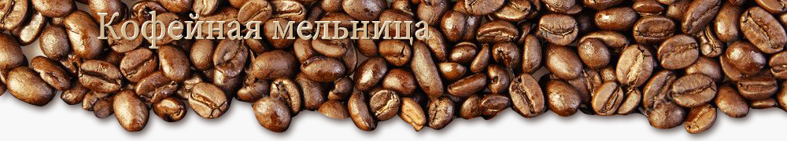

адресная строкаЭлектрическая кофемолка — компактное устройство, с помощью которого кофейные зерна превращаются в порошок. Все электрокофемолки делятся на две группы:
Ротационные модели оборудуются ножами, установленными на дне ёмкости, в которую загружаются зёрна. Ножи, вращаясь, измельчают зёрна, причём на интенсивность влияет продолжительность процесса. Недостаток таких устройств — не очень равномерный помол.
Жерновые кофемолки работают иначе. Зерна перетираются между жерновами, расстояние между которыми можно регулировать — от него зависит степень помола.
На что обратить внимание при выборе электрокофемолки? Важные параметры:
В интернет-магазине «Кошки-мышки» вы можете купить электрические кофемолки по выгодной цене с доставкой по Москве и другим регионам России. В каталоге представлена продукция De' Longhi, Bosh, Bork, VITEK и других популярных торговых марок...
© Все права защищены.
GeekBrains, Курс HTML/CSS, задание к уроку-1
GB-ID-3837199.